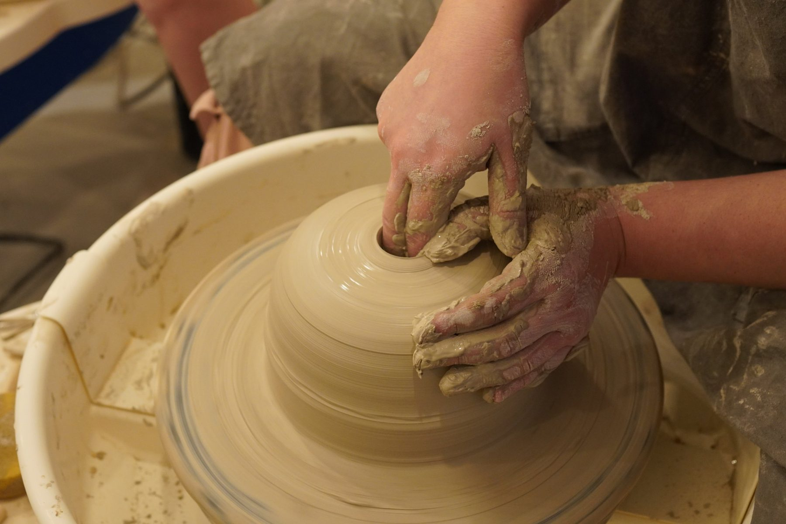
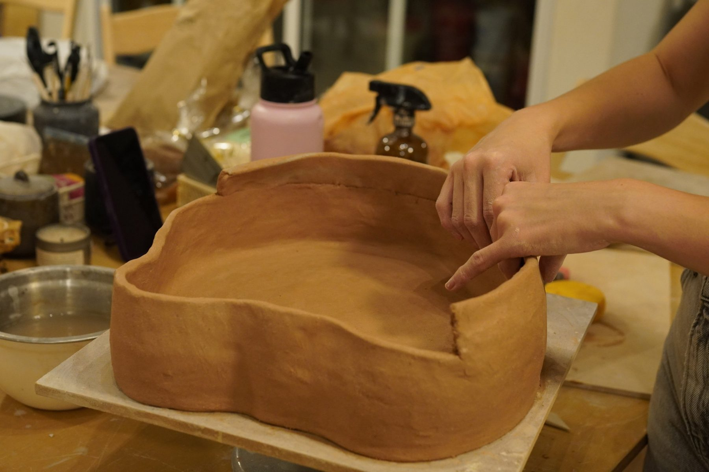
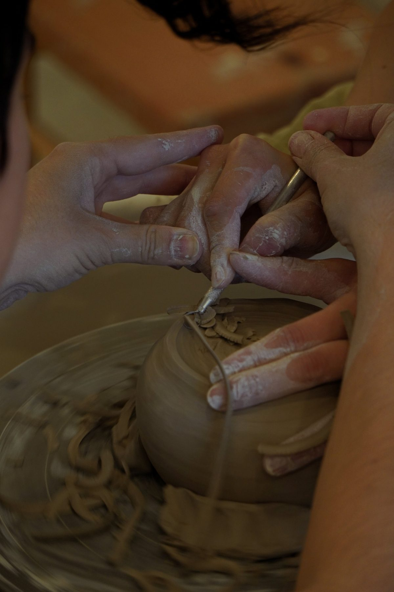
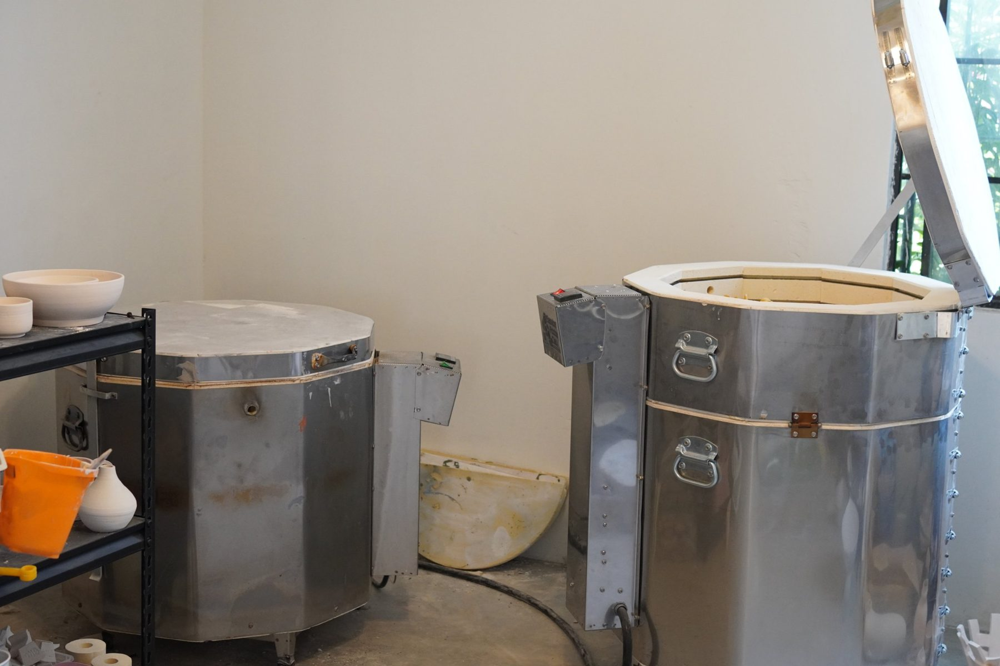

01.

Torno
desde $3,600
4 semanas, una clase de 3 horas por semana. Materiales y quemas incluidos.
[ Ver talleres ]
Taller de cerámica
Talleres de construcción manual, torno y experiencias
Lo que ofrecemos
Desliza para ver todos los servicios →
01.

desde $3,600
4 semanas, una clase de 3 horas por semana. Materiales y quemas incluidos.
[ Ver talleres ]02.

desde $3,100
4 semanas, una clase de 3 horas por semana. Materiales y quemas incluidos.
[ Ver talleres ]04.

$1,800
Dos clases: haces tu pieza y la esmaltas. Te la llevas a casa.
[ Ver experiencias ]05.

$1,300
Tres horas, solo tú y la maestra.
[ Ver clases privadas ]06.

desde $550
Un piso o el horno completo, en bizcocho o alta temperatura.
[ Ver precios ]Recién salidas del horno
Torno y construcción manual
01 / 18